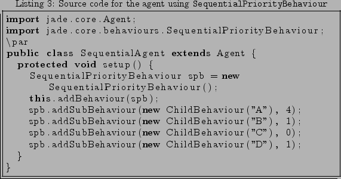

Next: Credits Up: Description Previous: Concurrent management of behaviours
Each child is assigned with a priority by the user. The scheduler selects the first inserted behaviour with the highest priority, and executes it until it ends. During the execution, can happen several things. The first is that a new child with a higher priority is inserted, or that an already existent child with lesser priority changes to get a higher priority. In both cases, the scheduler stops the execution of the current behaviour and it selects the new child, starting to execute it until it ends.
The other issue happens when the selected child is blocked or becomes blocked. If we were using a SequentialBehaviour this composite behaviour would become blocked until the selected child becomes unblocked. In the case of the new SequentialPriorityBehaviour this policy can be changed. The default policy is the same as in the SequentialBehaviour, that is, the SequentialPriorityBehaviour becomes blocked until the selected child becomes runnable. The other policy is to skip the blocked children. So when the SequentialPriorityBehaviour selects a blocked sub-behaviour, the scheduler skips it and selects the next first inserted behaviour with the highest priority that is runnable. In both cases if a new behaviour with a higher priority appears, the scheduler selects the new one.
As in the last section, In order to understand the functioning of this new
behaviour, we will use an example similar to the one used in the last section.
In this case we will create a SequentialPriorityBehaviour using the
policy of skipping the blocked children (see listing
3). Also we will create four children,  ,
,  ,
,  and
and  , with priority 4, 1, 0 and 1,
respectively. This sub-behaviours are the same as in the last section, and they
end when they are executed twice (see listing 1). To make the
example more complete, children
, with priority 4, 1, 0 and 1,
respectively. This sub-behaviours are the same as in the last section, and they
end when they are executed twice (see listing 1). To make the
example more complete, children  and
and  are blocked. In table
2 can be noticed the steps followed by the
algorithm.
are blocked. In table
2 can be noticed the steps followed by the
algorithm.

|
It is worth to note that if all children are blocked, the SequentialPriorityBehaviour becomes blocked.
Also, if we do not assign priorities and we use the default policy (that is, do not skip the blocked sub-behaviours), the SequentialPriorityBehaviour behaves exactly like the current SequentialBehaviour.
Juan A. Suarez Romero 2006-10-27